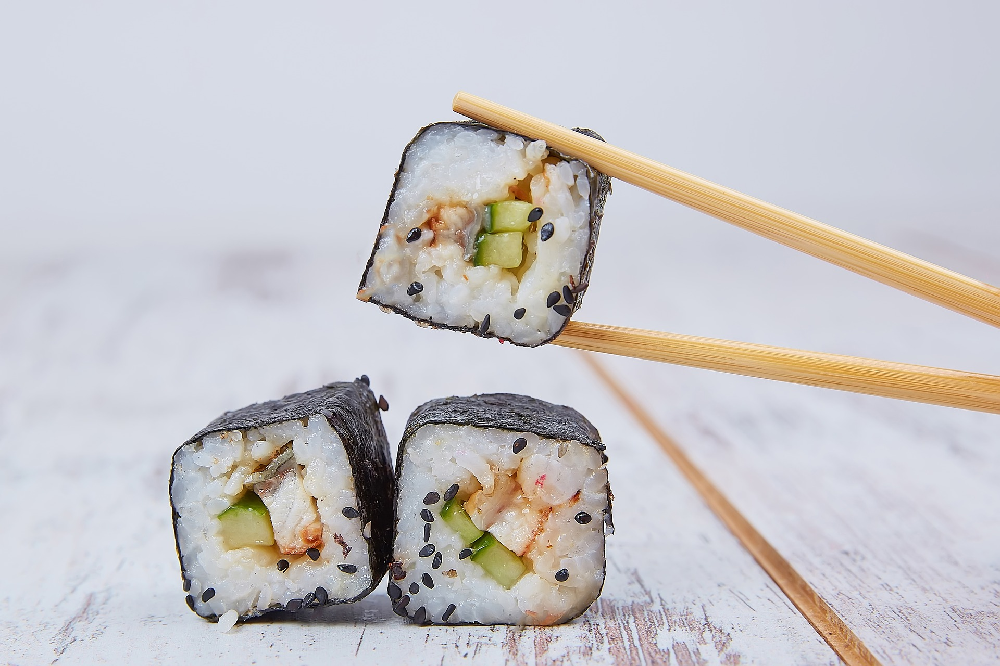

Food in Japan
Do you want to learn more about the japanese traditional food? The this article is the right place. Here we will look at the modern traditional japanese food. Read more here
24 hours in Tokyo

What if you were to visit Tokyo but only for 24 hours? You would want to be prepared, right? In this article we will look in to the best places in Tokyo to visit in only a day. Read more here
Mount Fuji

Mount Fuji as the highest peak in Japan has a lot of history behind itself. In this article we will look at some facts related to it's history from centuries ago until nowadays. Read more here